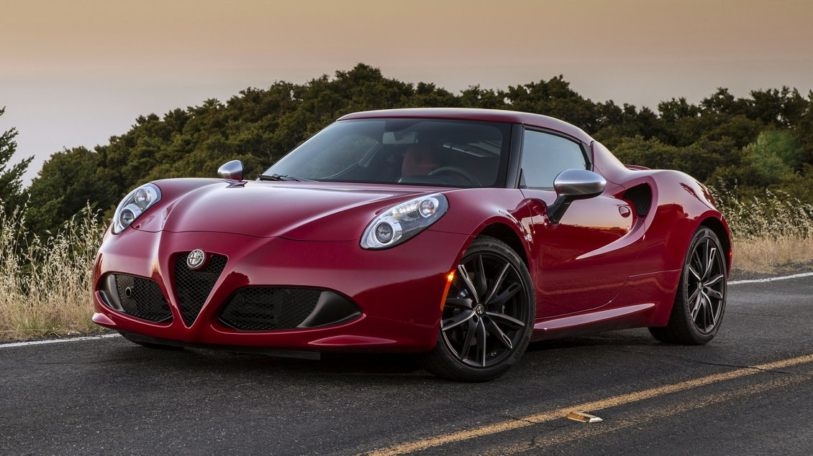
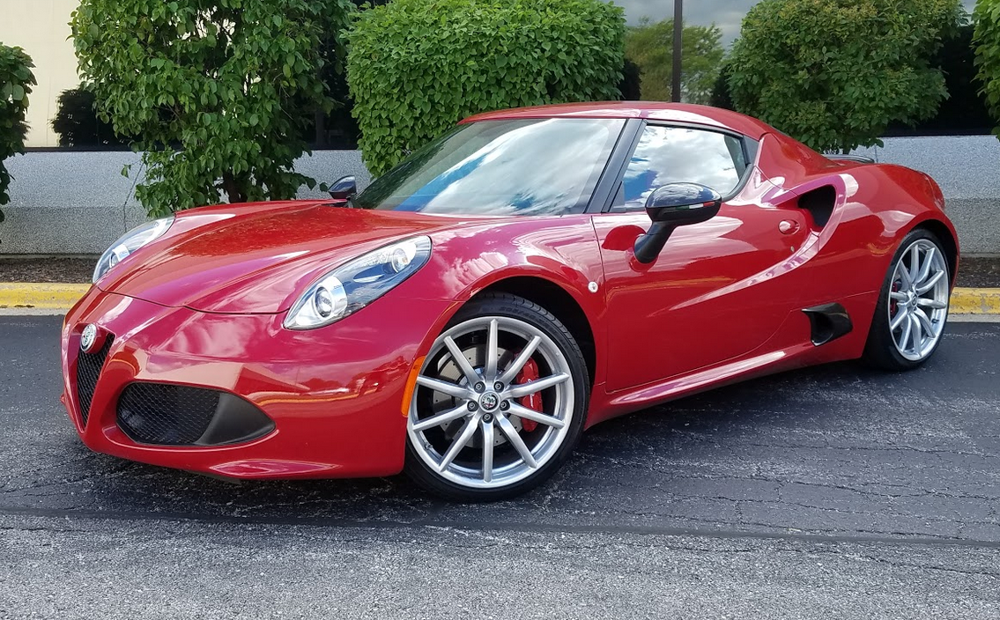
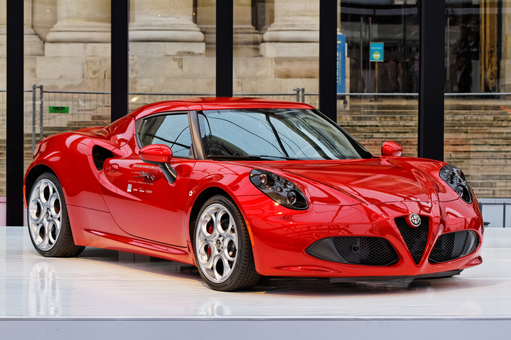
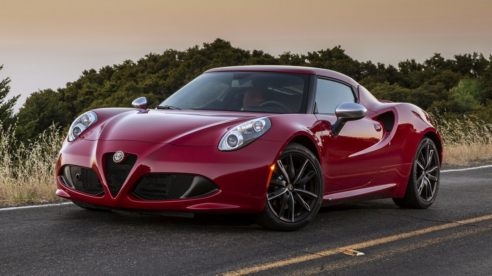
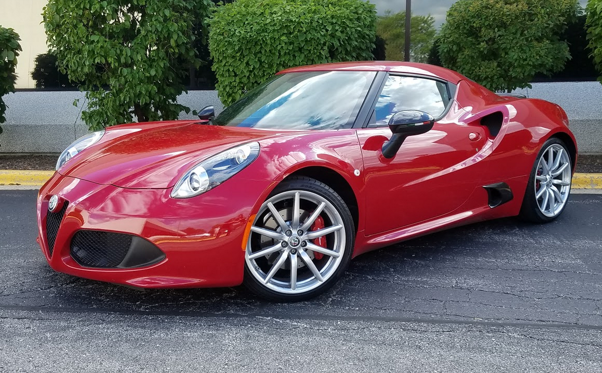
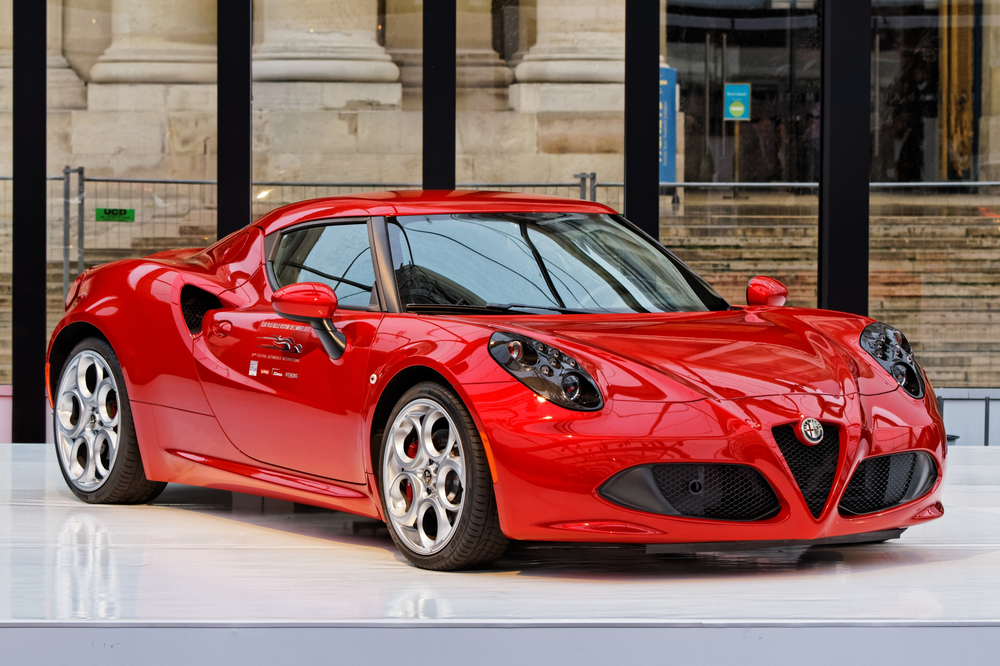

Alfa Romeo 4C FOR SALE!
Alfa Romeo 4C: Italian Design and Thrilling Performance
Overview
The Alfa Romeo 4C is a compact sports car that brings together Italian design and thrilling performance in a lightweight package. With its low, aggressive stance and sleek curves, the 4C is unmistakably Alfa Romeo. Built for pure driving excitement, this car is designed for those who appreciate a balance of style, performance, and exclusivity.
Performance and Features
The Alfa Romeo 4C is powered by a 1.75L turbocharged inline-4 engine that produces 237 horsepower. While the power may seem modest, the 4C’s lightweight carbon-fiber monocoque chassis allows it to accelerate from 0 to 100 km/h in just 4.1 seconds, with a top speed of 258 km/h. The car is equipped with a 6-speed dual-clutch transmission, ensuring lightning-fast gear changes and delivering a truly responsive driving experience.
Inside, the 4C is all about the driver. The minimalist cockpit focuses on performance, with exposed carbon fiber and racing-inspired seats. While it forgoes some of the luxury features found in other sports cars, it makes up for it with its lightweight and race-ready feel. It’s a car built for those who crave a pure connection between driver and machine.
Market Price
The market price for an Alfa Romeo 4C starts at around $70,000 in the United States, though limited production has caused prices for well-maintained models to rise. In South Africa, the price typically ranges from R1.2 million to R1.6 million, depending on availability and condition.
The Alfa Romeo 4C is a driver’s car through and through, delivering a thrilling, pure driving experience that combines Italian style with sharp performance, making it a standout in the world of lightweight sports cars.